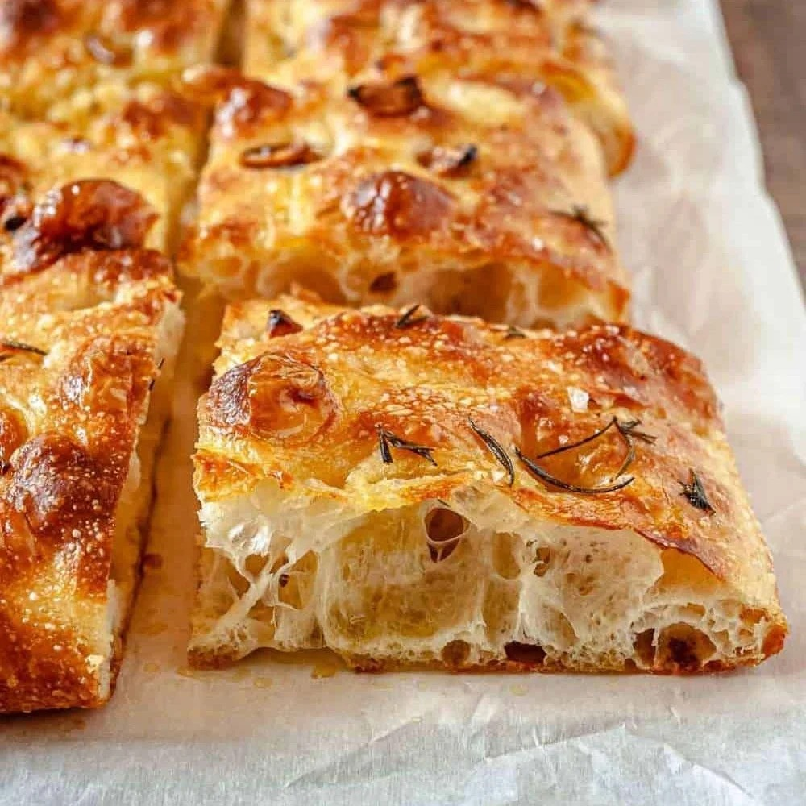

佛卡夏



佛卡夏（Focaccia）是一种源自意大利的扁平面包，其名字 “Focaccia” 来源于拉丁语 “focus”，意为 “中央” 或 “火炉”，因为传统上它是在住宅中央的炉膛中烘烤的。佛卡夏外皮金黄酥脆，带有橄榄油的醇香，内部蓬松湿润，布满不规则大气孔，橄榄油的醇厚与香草的清新完美平衡，余味中淡淡的咸味和麦香在口中久久不散。形状较为多样，可圆可方，厚度通常在 1-2 厘米，表面一般会有手指按压出的孔洞，并撒有橄榄油、香草等。 佛卡夏的历史可以追溯到古罗马时代，甚至更早，据说伊特鲁里亚人或古希腊人可能就已经制作类似的面包，它也被认为是现代披萨的前身。在意大利不同地区有多种变体，如热那亚佛卡夏（Focaccia genovese），表面有手指大小的孔洞，烤制前会刷或撒上橄榄油、粗盐等；雷科佛卡夏（Focaccia di Recco），在两层薄面团中间夹有斯特拉奇诺奶酪；还有甜佛卡夏（Focaccia dolce），表面撒有糖，可能还会加入葡萄干或蜂蜜等。